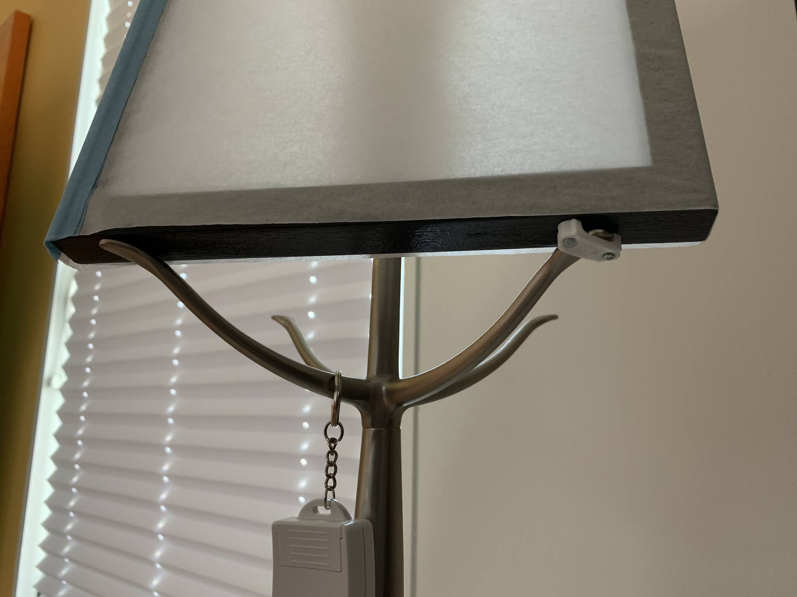
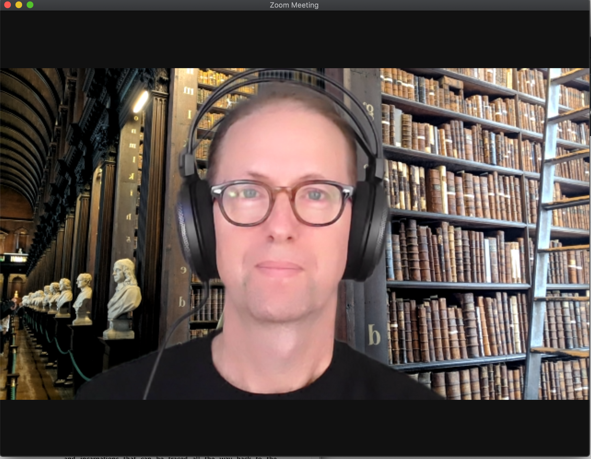
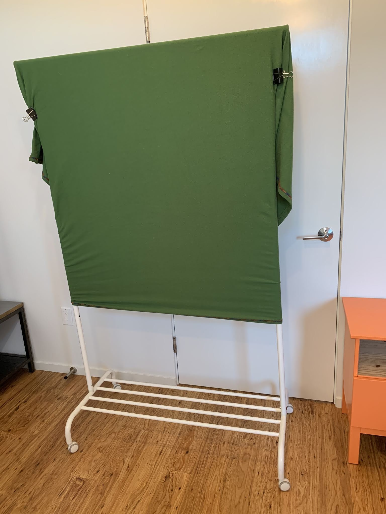

This was originally posted on Blogger here.
One of my colleagues recently asked me about my home office setup, after noting that my video and audio quality is generally quite good on our frequent Zoom calls. Whenever anyone asks me a question like this, I take it as a good excuse to write a blog post!
We have all spent a lot of time in our home offices since March, and I’m lucky that we have a guest bedroom that I was able to repurpose as my home office. I’ve ended up spending a bit of money to make it nice, but I think in general the investments have been good. However, I’ve also gone cheap/DIY when I can. Here is a photo of my desk setup:

Here’s a quick rundown of the various items:
- Camera: Logitech C930e
- Microphone: Audio-Technica ATR2100x-USB with Sterling Audio Sterling SM5 Shock Mount
- Pop Filter: Stedman Proscreen XL
- Mic boom: Rode PSA1
- Headphones (over-ear): Audio-Technica ATH-AD700X Open-air
- Headphones (in-ear): Apple AirPods
- Lighting: Homemade diffusers with Cree 5000K LED bulbs
- Green screen: Homemade
- Chair: Steelcase Leap
Camera: This webcam was scavenged from my lab at the beginning of the pandemic, back when it was impossible to find a webcam in stock for purchase. It works fine, though I wouldn’t say that the picture quality is amazing. After seeing one of my colleagues get amazing video quality by using their DSLR as a webcam, I tried it out with our relatively ancient Canon Rebel - the color was much better but its video was way too laggy, and the camera/tripod setup took up too much room on my desk, so I’ve stuck with the Logitech. I use the Webcam Settings App for Mac to zoom the image so that my head takes up most of the image without having to lean into the camera.
Microphone setup: I wanted to get a boom mic rather than a stand mic, mostly because I didn’t want a stand mic taking up extra space on my desktop. I know that many people use either a lapel mic or a mic integrated into their headset, but neither of those sounded attractive to me. The microphone connects via USB to my computer, and works really well. I went for a nicer mic in part because I was planning to record an audio version of my statistics book to provide to my students, and I’ve been really happy with the sound quality. The shock mount does a good job of isolating low-frequency noise from the desk, though a tiny bit of keyboard noise is evident when I’m typing, even with the mic pointed directly away from the keyboard. The Rode mic stand can sometimes be difficult to keep in position, but works fine for my purposes. I don’t use the popscreen for Zoom calls, but it has been important for recording spoken word material, which otherwise sounds like I’m spitting on the listener.
Headphones: I generally alternate between in-ear and over-ear headphones over the day. I love the AirPods, but after a while they start hurting my ears, and they don’t have enough battery life to get me through a full day of Zoom meetings. The Audio-Technica headphones were my first open-back headphones, and I am definitely a convert - they let you hear the outside world, and don’t leave you with that closed-in feel that you get from closed-back headphones. They are also super comfortable. These are standard wired headphones, which I like both because they don’t have a lag like bluetooth headphones (not so important for Zoom calls but essential when I’m playing guitar), and also because I will never be stuck with a dead battery.
Lighting: Everything else involved buying some equipment, so for the lighting setup I decided to go DIY (with lots of help and encouragement from my designer/wife Jen). I wanted a simple two-point lighting setup from the two sides of my monitor, so we started with a couple of old table lamps that we had around the house. I took a couple of empty wooden picture frames and attached each one to one of the arms of the lamp using a plastic cable stay, which is not exactly bulletproof but so far as lasted several months without failing.

To create a diffuser I started with some architectural tracing paper which I affixed in a sleeve around the picture frames. ultimately this wasn’t quite enough diffusion (I was still seeing strong reflections of the light in my glasses), so I also attached a piece of standard printer paper to the front with a binder clip. I still get a bit of point glare, but it’s not too bad:

I’ll probably try to do some more tweaking to resolve that. We started with some warmer bulbs but I didn’t love the color, so I replaced them with Cree 5000K LED bulbs which I’m pretty happy with.
Green screen: I don’t usually use a green screen, but sometimes I need it if I want to play with video editing software for lecture videos. This one is also DIY - basically a wheeled clothing rack with a green fleece blanket attached using some large binder clips.

Definitely not pretty, but gets the job done.
Chair: After spending the first few months of quarantine sitting in a cheapo office chair (and feeling the effects by the end of the day), I decided to splurge on a serious office chair. I already had a Steelcase Leap in my campus office, so I knew I would be happy with it. It has not disappointed - it’s definitely not cheap, but if you need a really good chair and have the budget I would definitely recommend it. Your butt will thank you!
I’m interested to hear your thoughts and any tips on how to further optimize the setup.
3 comments captured from the original post
Russ Poldrack · 2020-10-13
Anonymous · 2020-10-15
Anonymous · 2021-01-16